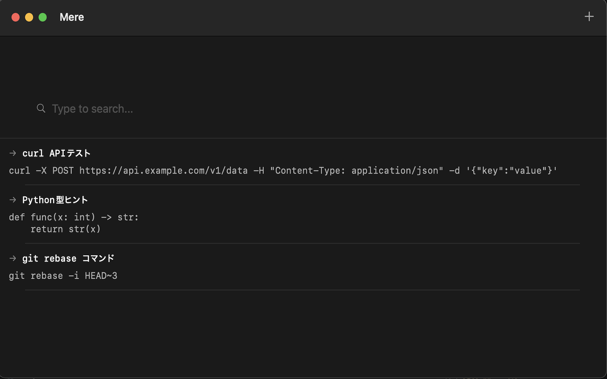

Snippet Manager for Engineers
ローカルで完結。シンプルに検索。
あなたのスニペットを、思考の速さで。
Mereは、エンジニアのためのmacOS専用スニペット管理アプリです。よく使うコマンド、APIの叩き方、ちょっとしたコードの断片——それらを素早く保存し、瞬時に呼び出せます。

タイトルやコンテンツから即座に検索。検索バーに入力するだけで、必要なスニペットがすぐに見つかります。
すべてのデータはローカルに保存。クラウド同期なし、サインアップ不要。プライバシーとセキュリティを最優先。
モノトーンで洗練されたインターフェース。余計な装飾を排し、スニペット管理に集中できるデザイン。
こんなときに便利です：
Mereは、以下の技術で構築されています：